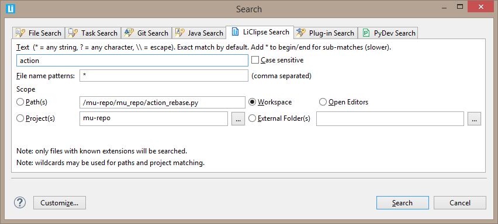
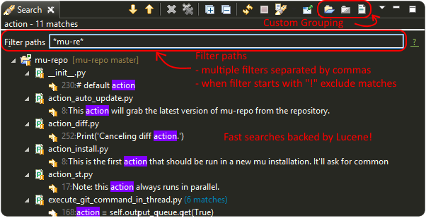

LiClipse provides improved search capabilities to Eclipse by using Lucene for text based searches, besides providing searches
on different scopes, such as searching in external folders and open editors.
The image below shows the search dialog (activated through Ctrl + H), where it's possible to select what/where to search. The path(s) and project(s) are updated
when a search is requested based on the current selection.

It's interesting to note that the index is built (and checked for consistency) on-the-fly when a text search is requested, which
means that the indexing won't add any overhead on the build process (although that means that the first time some scope is
searched it may take a bit more time to build the indexes -- which should be comparable to a regular text search on Eclipse --
so that subsequent calls are nearly instant).
The search results page also offers additional flexibility, which allows grouping the matches in different ways -- they can be flattened,
grouped by project, folder or files -- and filtering the results based on the paths (multiple terms may be comma-separated and "!" can
be used in the beggining of the term to exclude matches).
